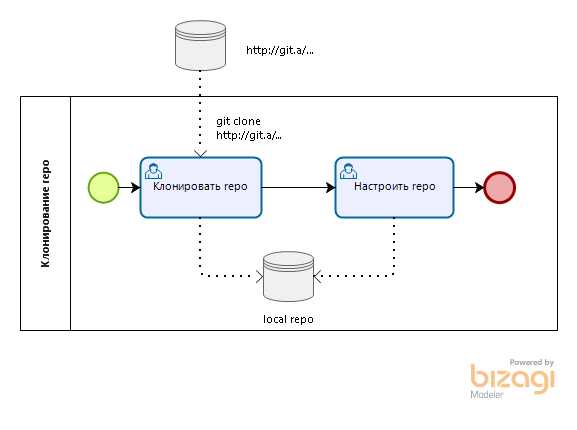
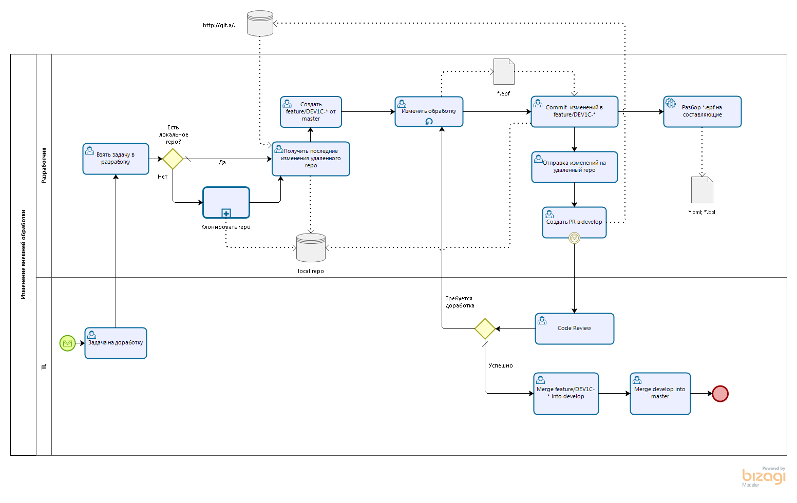

Описание¶

Суть проблемы¶
- Редактирование неактуальных версий внешних отчетов и обработок.
- Ручной процесс применения изменений сразу для нескольких информационных баз.
- Отсутствие контроля за процессом изменения внешних отчетов и обработок.
Цели¶
- Хранение внешних обработок в одном месте для различных информационных баз.
- Использование системы контроля версий.
- Автоматизированная доставка изменений до информационных баз.
Связь с целями и стратегией¶
Однотипность процесса разработки, уменьшение затрат на разработку, разработка в любой среде, контроль качества кода.
Решение¶
-
Хранить внешние обработки в системах управления репозиториями программного кода для распределенной системы контроля версий Git.
- GitLab Enterprise Edition не ниже 11.4.0-ee.
- ...
-
Разработать веб-сервисы и клиент для интеграции с внешними хранилищами кода.
-
Реализовать в информационных базах получателях API обновления внешний отчетов и обработок. Пример подобной реализации.
BPMN: процесс разработки внешней обработки¶
 
Интеграция с внешними хранилищами кода¶
GitLab¶
Информация об изменении кода во внешнем хранилище поступает через систему оповещения о событиях (webhooks). Диаграмма последовательности иллюстрирует этот процесс.
- Для контролируемой ветки в удаленном репозитории на сервере GitLab выполняется некоторое событие.
- На сервере GitLab срабатывает webhook в виде запроса по методу POST к HTTP-сервису 1С
epf-transmitter. - Веб-сервис
epf-transmitterпроводит аутентификацию и проверяет данные запроса, переданный в форматеjson (application/json). Если аутентификация пройдена и данные корректны, то возвращается HTTP-ответ с кодом 200. В противном случае - код ошибки. - Веб-сервис
epf-transmitterв фоновом задании обрабатывает тело запроса, подготавливая данные для каждогоcommitиз запроса:- с сервера GitLab для каждого
commitзабирается своя версия файла настроек маршрутизации данных по базам-получателям (по умолчанию, файл.ext-epf.jsonв корне репозитория); - с сервера GitLab для каждого
commitзабирается своя версия бинарного файла с расширением*.epf, *.erf; - данные сохраняются в
epf-transmitterдля возможности анализа и повторной отправки данных; - подготавливаются данные согласно маршрутам доставки;
- каждый файл в своем фоновом задании отправляется в информационную базу-приемник с сохранением данных о результатах доставки;
- с сервера GitLab для каждого
Рекомендуемый вариант workflow¶
Рекомендуемый подход к работе с epf-transmitter заключается в использовании выделенных веток для контролируемой доставки изменений.
- Основная разработка ведется в ветке
master(илиdevelop). - Подготовка релиза выполняется релиз-менеджером. Он отбирает готовые к доставке коммиты из
master, при необходимости корректирует файл маршрутизации.ext-epf.jsonи формирует единый, самодостаточный релизный коммит. - Доставка изменений инициируется через принудительный push (
force push) этого релизного коммита в специализированные ветки, например,deploy-test-srs-XXX,deploy-testиdeploy-prod.
Такой подход обеспечивает полный контроль над процессом доставки, сохраняя при этом историю релизов в deploy-* ветках чистой и понятной: один коммит = один деплой.